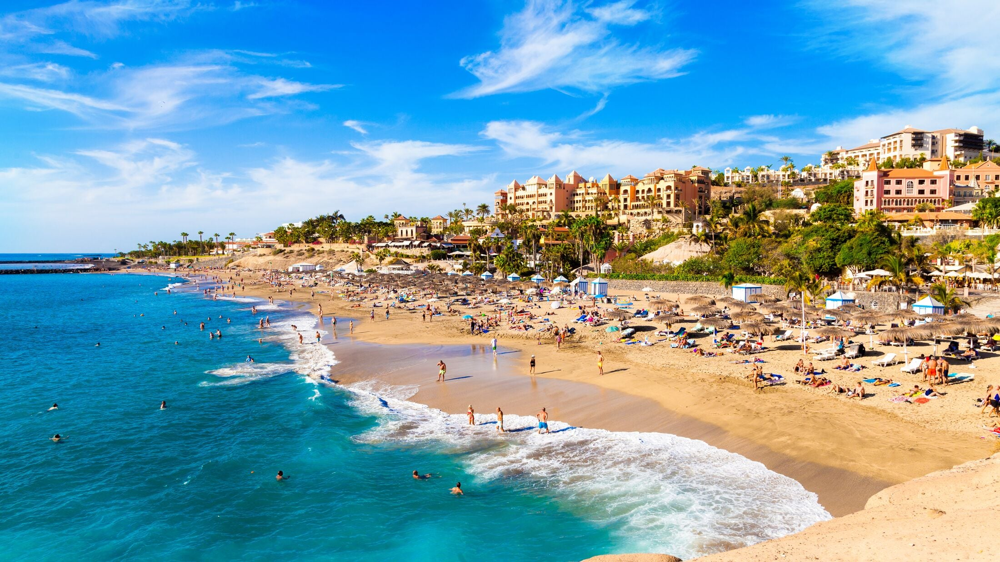

ЛЕТНА ПОНУДА

ПРЕПОРАЧАНА ПОНУДА
Тенерифе, Шпанија
10.07 - 18.07
Удобен хотел на прекрасниот остров Тенерифе, идеален за одмор покрај океанот. Уживајте во сончевото време, прекрасните плажи, локалната кујна и незаборавните пејзажи на Канарските Острови.
Главниот град на Тенерифе, познат по својата модерна архитектура, живописните плоштади и пријатната градска атмосфера. Меѓу позначајните места се Plaza de España, Auditorio de Tenerife и Parque García Sanabria. Градот нуди одлични можности за прошетка, шопинг, кафе и уживање во локалната атмосфера.
Едно од највпечатливите природни богатства на Тенерифе, познат по вулканските предели и величествениот вулкан Теиде. Посебна атракција се Roques de García, препознатливи карпести формации опкружени со уникатен планински пејзаж. Паркот нуди прекрасни погледи и можност за фотографирање и уживање во природата.
Едно од најпознатите туристички одморалишта на Тенерифе, познато по своето крајбрежје, плажите и живописната атмосфера. Крајбрежното шеталиште е исполнето со кафулиња, ресторани и продавници, а местото нуди одлични услови за одмор и уживање покрај океанот. Патниците можат да уживаат во прошетки, шопинг и слободно време на плажа.
Прекрасните плажи на Тенерифе нудат можност за целосен одмор и уживање покрај Атлантскиот Океан. Денот е идеален за капење, сончање, релаксација и прошетки покрај морето. Крајбрежните кафулиња и ресторани овозможуваат пријатно уживање во локалната атмосфера.
Историски град на Тенерифе и дел од светското културно наследство на УНЕСКО, познат по својата колонијална архитектура и живописниот стар град. Меѓу позначајните места се Plaza del Adelantado, катедралата и Calle Obispo Rey Redondo. Градот е идеален за прошетка низ историските улички, фотографирање и уживање во локалните кафулиња и ресторани.
Живописно крајбрежно место на западниот дел од Тенерифе, познато по огромните вулкански карпи кои се издигнуваат над океанот. Пристаништето и крајбрежната зона нудат прекрасни погледи кон Los Gigantes и Атлантскиот Океан. Местото е идеално за прошетка, фотографирање, кафе и уживање во морската атмосфера.
Состанок со групата на аеродром во Скопје, 2 часа пред летот. Следува директен лет до Тенерифе и пристигнување на аеродромот. По завршувањето на аеродромските процедури следува организиран трансфер до хотелот и сместување. По сместувањето следува време за одмор и освежување. Попладнето е предвидено за прва прошетка низ околината и запознавање со местото. Вечерта останува слободна за вечера и индивидуални активности. Ноќевање во хотел.
Појадок во хотелот и организирано тргнување кон Санта Круз. Следува прошетка низ главниот град, со посета на Plaza de España, Auditorio de Tenerife и Parque García Sanabria. Потоа следува слободно време за шопинг, ручек, кафе и индивидуално разгледување на центарот. Патниците ќе имаат можност да ги истражат главните пешачки улици и локалните продавници. Во попладневните часови следува организирано враќање во хотелот. Вечерта е слободна. Ноќевање во хотел.
Појадок во хотелот и организирано тргнување кон Националниот парк Теиде. Следува посета на вулканот Теиде и разгледување на уникатните вулкански предели и планинските пејзажи. Програмата продолжува со застанување кај Roques de García, една од најпознатите природни атракции во паркот. Предвидено е време за фотографирање, одмор и уживање во природата. Во попладневните часови следува организирано враќање во хотелот. Вечерта е слободна за одмор. Ноќевање во хотел.
Појадок во хотелот и организирано тргнување кон Плаја де лас Америкас. Следува прошетка низ познатото туристичко одморалиште и крајбрежниот дел. Патниците ќе имаат слободно време за одмор на плажа, кафе, ручек и индивидуално разгледување. Програмата продолжува со прошетка по шеталиштето и можност за шопинг во локалните продавници. Во попладневните часови групата се собира и следува организирано враќање во хотелот. Вечерта е слободна за вечера и одмор. Ноќевање во хотел.
Појадок во хотелот, по што следува ден посветен на одмор и уживање покрај океанот. Предвидено е слободно време на локалните плажи за капење, сончање, фотографирање и релаксација. Во текот на денот патниците ќе имаат можност за кафе и ручек во крајбрежниот дел, како и прошетка покрај морето. Попладнето продолжува со слободни активности и одмор на плажа. Во договореното време следува враќање во хотелот. Вечерта е слободна за прошетка, вечера и индивидуални активности. Ноќевање во хотел.
Појадок во хотелот и организирано тргнување кон Сан Кристобал де Ла Лагуна. Следува прошетка низ историскиот центар, со посета на Plaza del Adelantado, катедралата и Calle Obispo Rey Redondo. Потоа следува слободно време за фотографирање, кафе, ручек и индивидуално разгледување на градот. Во попладневните часови групата се собира и организирано се враќа во хотелот. Вечерта е слободна за прошетка, вечера и одмор. Ноќевање во хотел.
Појадок во хотелот и организирано тргнување кон Лос Гигантес. По пристигнувањето следува прошетка покрај пристаништето и разгледување на познатите карпи Los Gigantes. Патниците ќе имаат време за фотографирање, кафе и ручек со поглед кон океанот. Потоа следува слободно време за индивидуално истражување и уживање во крајбрежната атмосфера. Во попладневните часови групата се собира и организирано се враќа во хотелот. Вечерта е слободна за одмор и индивидуални активности. Ноќевање во хотел.
Појадок во хотелот и одјавување согласно предвиденото време. По собирањето на багажот следува организиран трансфер од хотелот до аеродромот. По пристигнувањето следува пријавување за летот и завршување на потребните аеродромски процедури. Потоа следува лет назад кон Скопје. По пристигнувањето и преземањето на багажот завршува организираното патување.